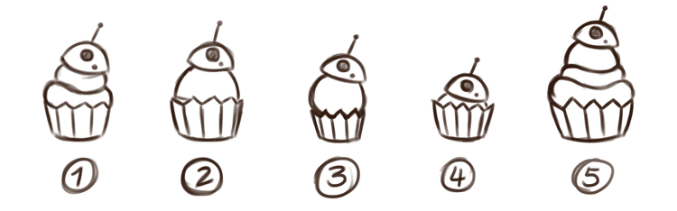
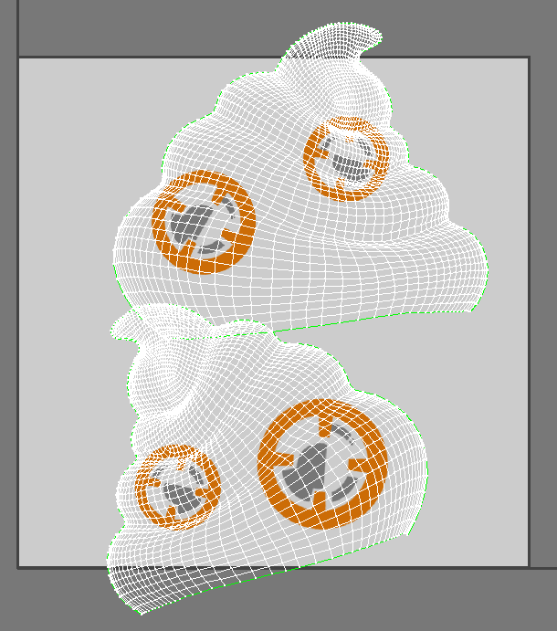

dim the lights
dim the lights
Type: Personal Project
Role: Ideation, sketching, modeling, texturing, rigging, animation, lighting, rendering
Tools: ZBrush, 3D Coat, 3Ds Max, Photoshop, After Effects
I wanted to make a small project that would allow me to focus on each aspect of the animation pipeline. Because the character and its animation were so simple, I was able to really focus on a clean execution and add all the details I wanted.
I started by looking up reference images of BB8 and implementing a recognizable design at a cupcake. It was a bit difficult to integrate his spherical bottom to fit well with the cupcake base, so designs 2, 3, and 4 were not preferable. I added some whipped creme to make it look more like a cupcake; however, in design 5, it was too tall, so I removed the sphere bottom entirely and ended up with design 1.
I began modeling the design. I started in ZBrush and then retopologized it in 3D Coat, then finally, I textured it in 3DsMax.
Afterwards, I added a background to help ground the character.
After everything was textured and lit, I started on the rough animation.
The main issues I faced when creating this character was trying to figure out how I would texture the “whipped creme” part of his body. I knew that BB8’s patterns were a little more detailed and had a specific shape that would get warped if I simply flattened his UV’s. To solve this I mapped his UV’s by the “front” and “back” normals. Because I knew the camera would not be moving, I was able to simply project the texture onto the UVs without worrying about the deformation showing from other angles.
I really wanted to focus on getting a clean motion with this animation. This was my first clean attempt while working with animation curves not only for the rotation and translation parameters, but also for the scaling ones as well. I believe that I accomplished several animation principles such as stretch and squash, follow through and overlapping actions, and anticipation. I hope to improve and include more principles within my animation work.